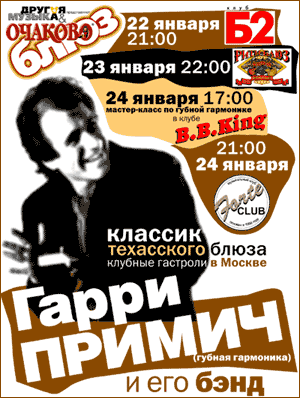

2004 |
зима |
|
рубрику |
|
|
 |
 |
 |
 |
*

Он прибыл в Москву 21 января. Не успев остыть от перелета на московском позднеянварьском морозце, тут же потребовал знакомства с тутошними блюзигрунами. Для чего был отведен на джем в клуб БиБиКинг. От водки не отказывался, наоборот, вел себя застрельщиком разлива по-новой. На большом лице глазки казались маленькими, но светились любопытством. Тут же заявил, что соберет в Москве все записи местного блюз-производства, какие только сможет.На сцену вышел с Николаем Садиковым, первую песенку спел так себе, для разгона. Зато потом, закатив глаза, ушел в театр одного актера, рассказывая о женской неверности, собачьей преданности и нерадостях труда в большой корпорации. Вот это был первый сюрприз. То есть, остроумные тексты в песнях Примича - обычная их примета. Но в альбомах он казался аккуратистом и в звуке, и в игре - чуть суховатым на эмоции, зато прилежным в выписывании каких-то нестандартных гармошечных заморочек. А тут играл то небрежно, то простовато. Зато в образ песни уходил с головой. Если уж горевал - то был трагичен как Сон Хауз, если уж гордился - то становился похож на Вилли Диксона, позирующего перед телекамерой. Очень захотел поиграть на гитаре, потому как делать на официальном концерте, якобы, стесняется. И уж под конец вечеринки спел песню, которую сочинил один его друг - про чувака, который собирает банки по обочинам дорог, и, абсолютной счастливый, на это и живет. Вот нежданная, но трогательная доза хиппизма-гедонизма.
За столом они с Юрием Каверкиным тут же принялись долго (даже слишком долго) обсуждать жизнь ядовитых ползучих гадов. Но это не главная тема в зоологии, которая интересует Примича. В его доме обитает полдюжины собак. И на протяжении многих лет он и его (в настоящий момент уже бывшая) супруга (кантри-певица надомница) подбирали бездомных и брошенных псов, дабы вернуть им доверие к homo suspense. Но и сейчас можно на его сайте посмотреть портрет собаки, которая предлагается любому желающему в друзья от Gary Primich Band.
- If I want a pussy I'd get me a pussy. If I want a friend, I'll call for my dog.
- Good theme for a blues.
- Yep.
22 был концерт в B2.
Эх, первой отделение... Встретили гастролера тепло, он разулыбался. Ну а потом от песни к песне хлопали все короче и тише. Поначалу играть "так назад" казалось какой-то супер-смелой фишкой. В конце концов, многие техасцы так любят. Пример тому, последний альбом Джимми Воэна. Но у Примича это "назад" едва не переваливало на "мимо и вперед". На фоне несуразности в ритме и гармоника звучала бледно. На большинстве концертов тут начинаются переглядки со сцены на звукача и воздевание пальцев к небу. Примичу все это было решительно по барабану, он играл свое, словно зрительного зала не существовало.
По счастью, во втором отделении звук поправился (не сам, естественно), Примич прибавил динамики (и в последующих концертах он так же строил соотношение первого и второго отделения). Свои соло он не сопровождал телесным устремлением, приседаниями и выпучиванием очей, как это делал Пол Лэмб (выдающийся музыкант, но и опытный шоумен). А вот гитарист Шорти Ленуари был весьма сродни лэмбовскому гитаристу Джонни Уайтхиллу: неторопливая манера игры, скупость движений, самоуглубленный взгляд, неряшливая одежда - всем, кроме комплекции. Юный вид барабанщика заинтриговал весь зал. Остальные участники бэнда с Примичем уже давно. А блондинчик пришел недавно, улыбался, сверкая зубами и производил впечатление юнца необстрелянного в блюзовом деле. А оказалось, парню 26 лет, и он уже подрабатывает преподаванием барабанного искусства.
Концерт в "Ритм-энд-блюз кафе" отличался в лучшую сторону. Но действительно удачным, похоже, было выступление в Forte. Тут уж не понятно, то ли звук был лучше, то ли группа играла чище.
Если итожить, то гастроли Примича лично для меня оказались одним из редчайших в блюзе случаев, когда записи производят однозначно большее впечатление, чем живой концерт. Тут могли сыграть роль обстоятельства личной жизни. Уж очень откровенно пофигистически относился солист к собственному выступлению. Можно, конечно, на мастер-классе отвечать на вопрос о настройке усилителя, обернувшись, чтобы посмотреть, как расположены на нем ручки на данный момент. И при этом замечательно сыграть "Key to the Highway", к примеру, "песню, когда-то любимую, но потом заигранную до полусмерти". Но с группой такое отношение однозначно не может быть приемлемым. Аккуратист в студии даже до некоторого перебора в "пресность", в концертах он полностью отдавался течению. И если в Forte все получилось, то в B2 он и не думал напрягаться, чтобы исправить ситуацию. Стилевое разнообразие альбомов в концертах ничуть не отразилось. Подавляющее до однообразия количество шафлов, разбавленное соул-балладами - вот и все, практически.
С другой стороны, когда солиста затрагивала песня по-настоящему, он давал очень искренний спектакль, в лучших традициях жанра перевоплощаясь в героя песни. Именно искренность оказалась приятным сюрпризом, поскольку на мой вкус альбомы его часто холодноваты не по темпу, а по эмоциям.
Ценность личного знакомства как раз раскрывается в сравнении концерта с записями. Даже в мелочах. Например, в альбомах Примича почти сплошь песни его сочинения, а если уж попадается что чужое - то какая-нибудь редкость. А в концертах оказалось достаточно хорошо известных стандартов. И исполнял он их с не меньшей отдачей, чем собственные песни, не скупясь на искренность. Или еще качество, свойственное подлинными, а не ученым блюзменам. Профессионального лабания не было. Было либо никак, либо здорово!
При всех порой очевидных недостатках, это были три дня хорошей музыки в Москве, три дня на знакомство с блюзменом опытным и весьма своеобразным.
PS. И если полный зал в клубе БиБиКинг на его открытом уроке в неурочный дневной час радовал интересом музыкантов (да еще столько молодых лиц), то полупустые клубные залы по вечерам наводили на грустные размышления. Конечно, бабки за билеты немаленькие. Но они - еще и вложение в будущие гастроли. А пока что все эти приезды - разорилово для энтузиастов. Давайте поиспытываем их энтузиазм. И потом, когда оный иссякнет, будем аккуратно раскладывать по полочкам компакты, купленные за еще большие деньги. Зато никто не будет нас дергать на концерты. Тут вам Москва, а не Чикаго и не Остин - так пусть так и остается.
Горячие споры в форуме по поводу гастролей Примича. Может, стоит теперь перечитать на холодную голову?
 Примечания к приезду Примича.
Примечания к приезду Примича.